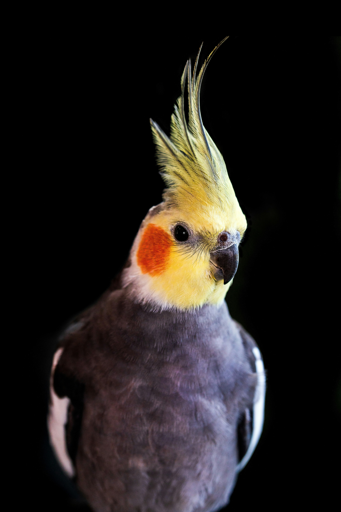

Indian Ringneck Parrots are known for their intelligence and ability to make excellent pets for the right
owners. To remain tame, they require consistent handling and interaction, as they can quickly revert to
their wild behavior if neglected. However, when well-socialized, they possess pleasant personalities and
can thrive in a loving environment.
These birds have a unique way of communicating with each other, using three distinctive calls to convey
messages. Native to central Africa and the Indian Sub-continent, Indian Ringneck Parrots have been
introduced to many other parts of the world through the pet trade, leading to the establishment of
feral populations.
In captivity, Indian Ringneck Parakeets require a larger cage than expected due to their long parakeet
tail. It's essential to ensure the bar spacing is not too wide, allowing the bird to get stuck or
escape. Additionally, they need ample space outside of their cage to stretch their wings and engage in
play. This active species requires a lot of exercise and mental stimulation to stay happy and healthy.
Indian Ringneck Parakeets are a beautiful sight to behold, with their bright green plumage and blue tail
feathers. The yellow under their wings adds a pop of color, making them a stunning addition to any home.
With proper care and attention, these birds can thrive and become a beloved companion for many years to come.
 |
 |
 |
 |
 |
| African Grey | Budgerigar | Cockatiel | Cockatoo | Macaw |
|---|---|---|---|---|

|

|
 |

|

|